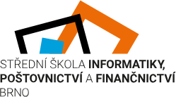

Střední škola informatiky, poštovnictví a finančnictví Brno (SŠIPF) je veřejná střední škola, která poskytuje vzdělání v oborech Informační technologie, Telekomunikace a Elektrotechnika Škola sídlí na ulici Čichnova v městské části Brno-Komín. Škola je zřizována Jihomoravským krajem. Ředitelkou školy je Olga Hölzlová, jejími zástupci jsou Lenka Skřivanová, Helena Zelníčková, Hana Trávníčková, Jana Švihálková, Jarmila Kubešová, Jaroslav Mašek a Jiří Vaněk [2].
